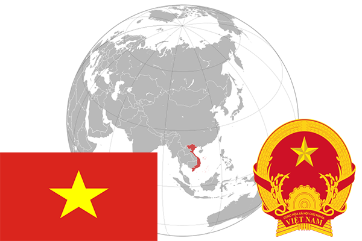

To`liq nomi: Vyetnam Sotsialistik Respublikasi
Region: Janubi-Sharqiy Osiyo
Qonunchilik shakli: Sotsialistik Respublika
Mustaqillik kuni: 2-sentabr 1945-yil
Poytaxt: Xanoy
Maydoni: 331 210 km²
Chegaradosh davlatlari: Laos, Xitoy, Kambodja
Aholisi: 92 477 857 (2013-yil)
Aholi zichligi: 273 /км²
Aholining o`rtacha yoshi: 75,78 yil
Rasmiy tili: Vyetnam tili
Dini: 80% buddizm, 9% islom va boshqa dinlar
Pul birligi: Vyetnam dong
Telefon prefiksi: +84
Internet domen: .vn
Xalqaro tashkilotlarga a`zoligi: BMT
Dengiz va okeanlarga chiqishi: Janubiy Xitoy dengizi
YIM: Butun: $234.6 mlrd (2017-yil)
Yirik shaharlari: Xanoy